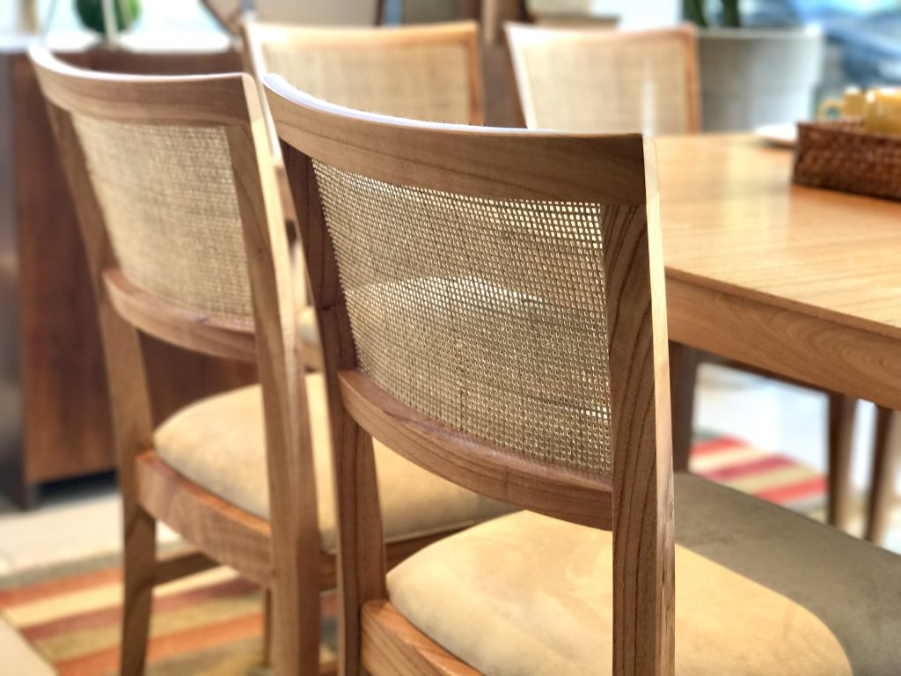
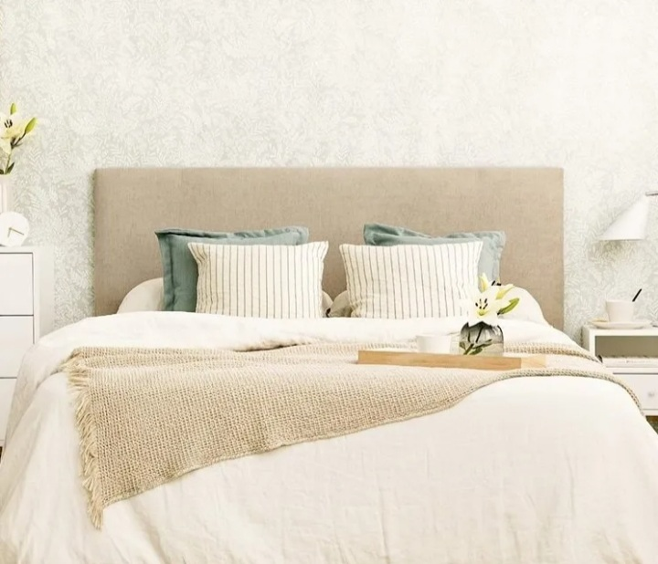
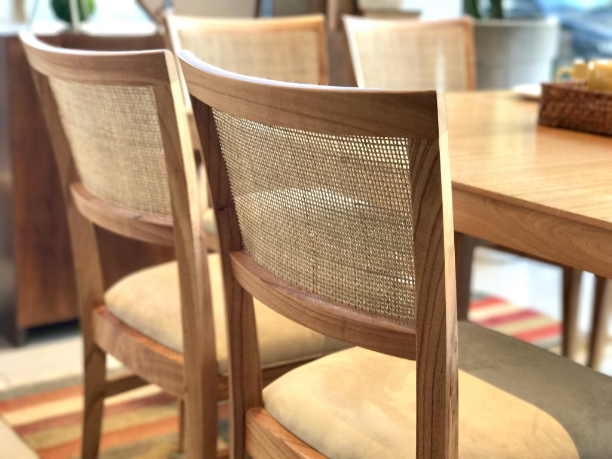
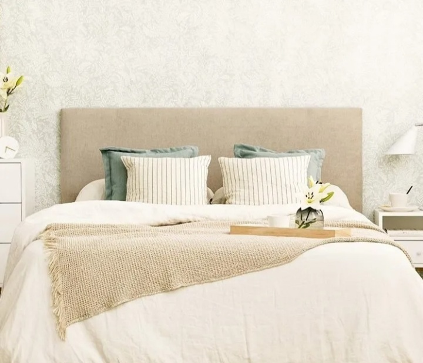
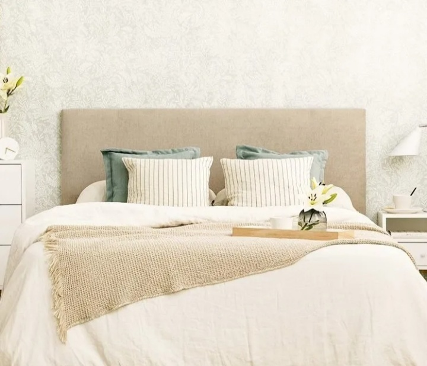

TAPICERÍA ARTESANAL
Tapizamos cualquier mueble de tu hogar o establecimiento (sillas, butacas, sofás, descalzadoras,
asientos
de
bar, peluquerías, hoteles,...), tanto de estilo moderno como antiguo (muelles, crin,…)
Tapizamos y/o arreglamos asientos de coche, moto,…
Realizamos la verdadera técnica del capitoné tradicional.
Trabajamos de forma totalmente artesanal, personalizando el tapizado al gusto del cliente.

DECORACION DEL HOGAR

En Tapicería Bayerque encontrarás todo lo necesario para vestir tu hogar o establecimiento de
la
manera
más
acorde a sus expectativas, gracias a la gran variedad y surtido con que contamos.
Confección y colocación a medida de cortinas, visillos, estores, paneles japoneses,… con
INSTALACIÓN
GRATUITA.
Colchas, edredones, fundas nórdicas, cojines decorativos,…
CABECEROS TAPIZADOS A MEDIDA
Retapizamos o fabricamosa medida cabeceros tapizados. Hacemos por encargo cabeceros
modernos o
clásicos, para camas de matrimonio o juveniles.Este tipo de muebles permiten un grado
total de
personalización: tú eliges el tamaño y el diseño entre cientos de posibilidades.
Disponemos de una
gran
svariedad de tejidos para escoger

Nos desplazamos gratuitamente para hacer un presupuesto sin compromiso.
Tapizamos cualquier mueble de tu hogar o establecimiento (sillas, butacas, sofás, descalzadoras, asientos de bar, peluquerías, hoteles,...), tanto de estilo moderno como antiguo (muelles, crin,…) Tapizamos y/o arreglamos asientos de coche, moto,… Realizamos la verdadera técnica del capitoné tradicional. Trabajamos de forma totalmente artesanal, personalizando el tapizado al gusto del cliente.

En Tapicería Bayerque encontrarás todo lo necesario para vestir tu hogar o establecimiento de la manera más acorde a sus expectativas, gracias a la gran variedad y surtido con que contamos. Confección y colocación a medida de cortinas, visillos, estores, paneles japoneses,… con INSTALACIÓN GRATUITA. Colchas, edredones, fundas nórdicas, cojines decorativos,…
CABECEROS TAPIZADOS A MEDIDA
Retapizamos o fabricamosa medida cabeceros tapizados. Hacemos por encargo cabeceros
modernos o
clásicos, para camas de matrimonio o juveniles.Este tipo de muebles permiten un grado
total de
personalización: tú eliges el tamaño y el diseño entre cientos de posibilidades.
Disponemos de una
gran
svariedad de tejidos para escoger

Nos desplazamos gratuitamente para hacer un presupuesto sin compromiso.
Retapizamos o fabricamosa medida cabeceros tapizados. Hacemos por encargo cabeceros modernos o clásicos, para camas de matrimonio o juveniles.Este tipo de muebles permiten un grado total de personalización: tú eliges el tamaño y el diseño entre cientos de posibilidades. Disponemos de una gran svariedad de tejidos para escoger
Nos desplazamos gratuitamente para hacer un presupuesto sin compromiso.